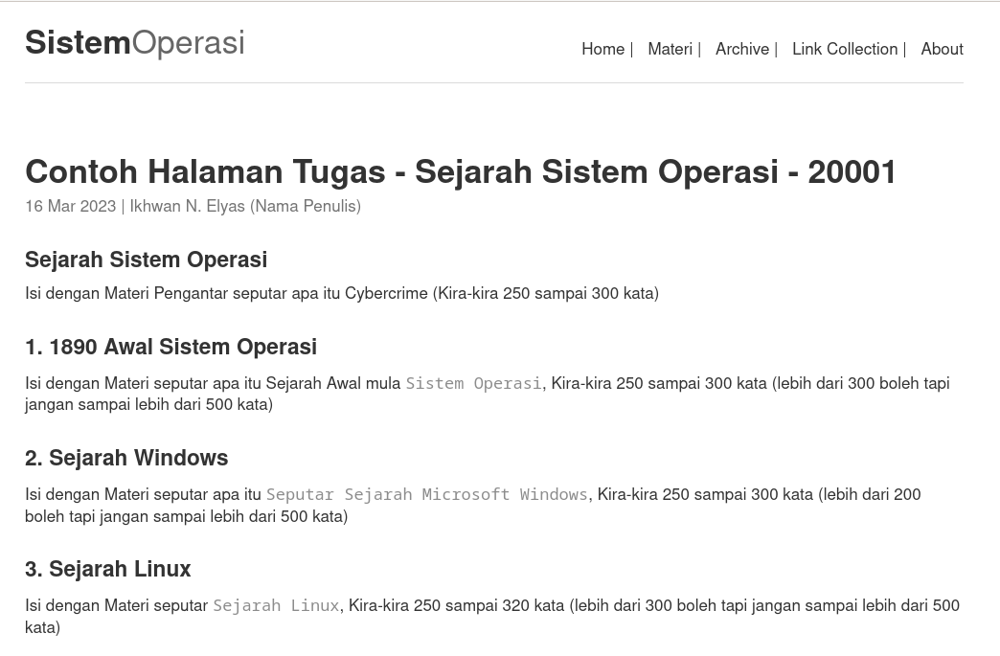

Pertemuan 03 - Sistem Operasi
PENGGANTI PERTEMUAN TIGA 03 - TUGAS:
| Status | : Online |
| Waktu | : 03/11/2023 |
| Tema | : Sistem Operasi |
| Pertemuan | : Pertemuan Ke-3 |
Buat Artikel Tentang Sejarah Sistem Operasi
- Untuk Pengganti Pertemuan ke-3, anda diminta untuk membuat Artikel dengan materi tentang
Sejarah Sistem Operasidengan ISI MATERI :- Sejarah Sistem Operasi
- Perkembangan Sistem Operasi
- Tulis Materi dengan mengikuti format
Markdownsesuai dengan file yang saya sharing berikut ini: Contoh File Markdown Ini - Download atau Copy dan simpan dengan NAMA FILE:
2023-11-11-tugas-so-p3-NPM.md(ubah NPM dengan lima digit terakhir npm anda) -
Ubah bagian
titledanauthoryang ada dibagian pertama/atas dari file dengan NPM anda (Lima digit terakhir) dan isi NAMA_ANDA--- title: Sejarah Sistem Operasi - NPM category: Tugas P3 author: NAMA_ANDA published: true ---Menjadi
--- title: Sejarah Sistem Operasi (Boleh Beda) - 20001 category: Tugas P3 author: Ikhwan N. Elyas published: true --- - Isi dan lengkapi dari file yang telah anda copy atau download dengan materi sesuai dengan yang sudah dijelaskan,
- Setelah itu, jika telah selesai silahkan mengerjakan tugasnya, UPLOAD/KIRIM ke
Google Drive inike masing-masing FOLDER yang sudah anda buat SEBELUMnya (Lihat INSTRUKSI pada TUGAS Pertemuan Ke-1 sebelumnya dibawah).
Online Markdown Editor
- Berikut Merupakan Pilihan Editor Markdown Online yang dapat anda gunakan untuk menyusun Tugas diatas selain pilihan Offline
CONTOH TAMPILAN TUGAS ANDA
- Anda bisa masuk ke LINK INI untuk melihat contoh tapilannya
- File Tugas yang anda tulis nantinya akan menghasilkan tampilan sebagaimana dibawah dan dibaca oleh banyak teman-teman:

By: Ikhwan@fedora37.linux